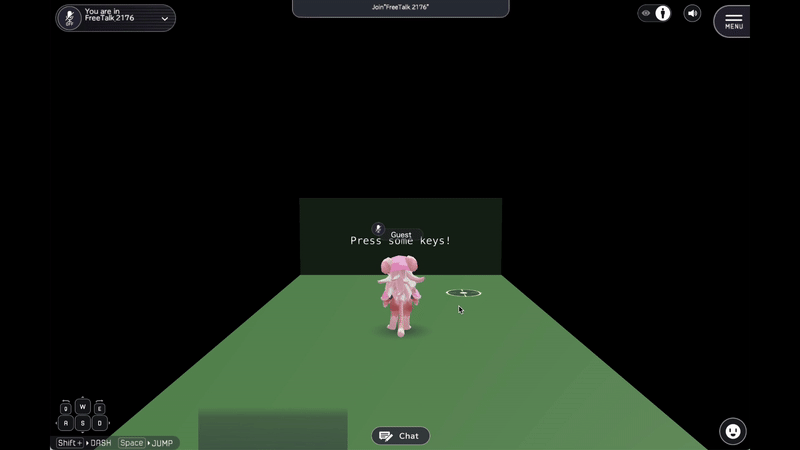

JS入稿のチュートリアルシーン
前提条件
- JS入稿機能をSDK13.7にてOnにする方法の前提条件を満たしていること
使用手順
- 上部メニューからVket Cloud SDK > Tutorial > Tutorial - Scripts - をクリックする
- Assets/Samples/VketCloudSDK/13.7.7/Tutorial -Scripts-/02_JSUpload.unityを開く。
- 上部メニューからVket Cloud SDK > Upload To Remote Serverをクリックする
- 事前準備で作成したワールドを選択し、Uploadボタンを押す
ビルド不具合について
Ver14.x現在、ビルドエラーの発生が確認されています。
下記手順で回避が可能です。
1. VketCloudSettingsオブジェクトを削除、再生成してください。
2. JS入稿手順を完了してください。
3. Worldオブジェクトにアタッチされているhsファイル(customDataExchange)を再選択してください。
シーン解説
キーボードの状態(Up and Down)がテキストとして表示されるシーンです。

このチュートリアルシーンでは、ユーザーのキーボード入力（キーの押下や離す動作）をリアルタイムで検知し、その状態（Down、Up）をテキストとして表示します。この一連の動作は、Vket Cloud側のHeliScriptスクリプトとJavaScriptを用いた双方向の通信を通じて実現されています。
通信の説明
HeliScript と、ブラウザ上で実行される JavaScript 間でデータを双方向にやり取りしています。この仕組みは、Unity側からの入力情報をJavaScriptに送信し、JavaScript側からそのデータを処理するという流れで構成されています。
- HeliScript ⇔ JavaScriptのデータ通信
- HeliScript側から JavaScript に対してデータ送信が行われ、また逆に JavaScript から HeliScript へデータが返されます。
- heliport.customApi 名前空間が両者の通信を仲介し、sendData や receiveData メソッドでデータの送受信を行います。
データフローの全体像
- キーボードの入力があると、JavaScriptがそのイベントを検知し、keyEventStream$ にデータを流します。
- JavaScript側で、キーの状態（Down/Up）が変化したタイミングでHeliScript側にデータを送信します。
- Heliscriptは OnReceive() メソッドでデータを受け取り、表示用のテキストを更新します。
- 必要に応じてHeliScriptからもJavaScriptにデータを送信し、クリックイベントなどを処理します。
JavaScript の実装
JavaScript側では、rxjs ライブラリを使用して、リアクティブなデータ処理を行っています。キーボードの入力イベントを監視し、状態の変化に応じてHeliScript側にデータを送信します。
const { Subject, zipWith, groupBy, distinctUntilChanged } = rxjs;
// インゲームから渡されたデータは fromIngame$ に流れている
const fromIngame$ = new Subject();
// インゲームから送られるデータのハンドラ
fromIngame$.subscribe((data) =>
console.warn(`Data received from ingame: ${data}`)
);
/**
* 1. JSからインゲームに渡すデータは toIngame$ に流す(next)
* 2. インゲームからのデータ取得要求は receiveRequest$ に流れてくる
* 1と2が揃ったらデータ取得要求に1のデータを渡して応答する
*/
const toIngame$ = new Subject();
const receiveRequest$ = new Subject();
toIngame$.pipe(zipWith(receiveRequest$)).subscribe(([v, f]) => f(v));
const keyEventStream$ = new Subject();
// キーイベントのデータをキーごとに分類し、downとupが切り替わった瞬間だけ toIngame$ に流す
keyEventStream$.pipe(groupBy((i) => i.key)).subscribe((g) => {
g.pipe(distinctUntilChanged((p, c) => p.state === c.state)).subscribe((i) => {
toIngame$.next(i);
});
});
function handleKeyEvent(e, state) {
if (
e.target &&
"nodeName" in e.target &&
e.target.nodeName in ["INPUT", "TEXTAREA"]
) {
// 入力欄にフォーカスしているときは反応しない
return;
}
// JSのイベントから必要なデータを取り出してRxJSのストリームに流して処理する
const item = { key: e.key, state };
keyEventStream$.next(item);
}
document.addEventListener("keydown", (e) => {
handleKeyEvent(e, "down");
});
document.addEventListener("keyup", (e) => {
handleKeyEvent(e, "up");
});
// インゲームが使用するデータ送受信API
const receiveData = async () =>
new Promise((resolve) => receiveRequest$.next(resolve));
const sendData = (data) => {
fromIngame$.next(data);
};
window.heliport.customApi = {
sendData,
receiveData,
};
-
handleKeyEvent() 関数
- keydown および keyup イベントを監視し、それぞれのイベントに対応するキーの状態を keyEventStream$ というRxJSのストリームに送ります。
-
データの送受信
- JavaScript側では、toIngame$ ストリームを通してHeliScriptにデータを送信し、fromIngame$ でHeliScriptからのデータを受信します。
- receiveData() メソッドは、HeliScriptからデータ要求があった際に、非同期的にデータを返す役割を持ちます。
HeliScriptの実装
HeliScriptでは、キーボードの入力状態を監視し、JavaScriptに送信します。また、JavaScriptからの入力データを受け取って処理します。
// デリゲートの宣言。JavaScriptから受け取ったデータを引数に取り、戻り値のない関数型
delegate void fJsValCallback(JsVal);
// JavaScriptのconsoleオブジェクトを外部宣言し、ログ出力を行うための関数を提供
extern console
{
void log(JsVal); // JavaScriptのconsole.logに対応
}
// カスタムAPIとしてデータ送受信用の関数を外部宣言
extern heliport.customApi {
void sendData(JsVal data); // データ送信用
void receiveData(async fJsValCallback); // データ受信用（非同期）
}
// キーボードの入力状態を監視してログを残し、表示するコンポーネント
component keyLogging
{
Item thisItem; // このコンポーネントに関連するアイテム
Item resultTextPlane; // 結果表示用のテキストプレーン
// コンストラクタ。アイテムを取得し、キー入力の監視を開始
public keyLogging()
{
thisItem = hsItemGetSelf(); // このコンポーネントが紐づくアイテムを取得
resultTextPlane = hsItemGet("KeyStatusText"); // テキスト表示用アイテムを取得
Watch(); // キー入力の監視を開始
}
// 毎フレーム呼び出される更新関数（ここでは何もしていない）
public void Update()
{
// 更新処理をここに追加可能
}
// JavaScriptからデータを受け取るための監視関数
void Watch()
{
heliport.customApi.receiveData(OnReceive); // JavaScriptからデータを非同期に受け取る
}
// JavaScriptから受け取ったデータを処理するコールバック関数
void OnReceive(JsVal data)
{
console.log(data); // 受け取ったデータをコンソールに出力
string key = data.GetProperty("key").GetStr(); // データの "key" プロパティを取得
string state = data.GetProperty("state").GetStr(); // データの "state" プロパティを取得
handleKeyInput(key, state); // キーの入力状態を処理
Watch(); // 次のデータを受け取るために再度監視を開始
}
// キー入力状態を処理し、テキストプレーンに表示
void handleKeyInput(string key, string state)
{
string text = key + " " + state; // キーと状態を文字列にまとめる
hsSystemWriteLine(text); // システムログに出力
resultTextPlane.WriteTextPlane(text); // テキストプレーンに表示
}
// ノードがクリックされたときの処理
public bool OnClickNode(int NodeIndex)
{
string clickedNodeName = thisItem.GetNodeNameByIndex(NodeIndex); // クリックされたノードの名前を取得
sendClick(clickedNodeName); // クリックされたノードの名前をJavaScriptに送信
return false; // クリック処理はここで終了
}
// 空のエリアがクリックされたときの処理
public void OnClickEmpty()
{
sendClick("Empty"); // 空のエリアがクリックされたことをJavaScriptに送信
}
// クリックされたオブジェクトの名前をJavaScriptに送信
void sendClick(string objName)
{
JsVal data = makeJsStr(); // 送信するデータを作成
data.SetStr(objName + " clicked."); // クリックされたオブジェクト名を設定
heliport.customApi.sendData(data); // JavaScriptにデータを送信
}
}
-
keyLogging コンポーネント
- キーボードの入力状態を管理し、Watch() 関数で JavaScript 側からのデータ受信を待ち受けています。
- 受信したデータ（OnReceive() メソッドで取得）は、キーの押下状態を示し、そのデータをUnity内のUIに反映させます。
-
主な機能
- heliport.customApi.receiveData() を使って、非同期的にJavaScriptからのデータを受け取ります。
- sendClick() メソッドは、ノードをクリックした際のイベントを JavaScript 側に送信します。